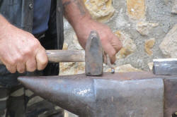
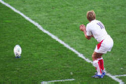

Word formation
If you are here for the first time, you can work through this guide
sequentially but if you are returning to check something, here's a list
of the contents to take you to its various sections.
Clicking on -top- at the end of each section will
bring you back to this menu.
|  | Forming new words |
How does English make new words?
Here are some examples:
| drive (verb) | ⇒ | drive (noun) |
| writer | ⇒ | co-writer |
| tick | ⇒ | tick-tock |
| cup + board | ⇒ | cupboard |
| perambulator | ⇒ | pram |
| motor + hotel | ⇒ | motel |
| happy | ⇒ | happily |
Take this little test to see if you can match the term for word formation to the examples.
If you found that test too difficult, you would be wise to do the initial training guide in this area before returning to try this again.
English makes a good deal of use of affixation (either suffix or prefix attachment), compounding and conversion but less of the other means of word formation. (Other languages may include, e.g., infixing in the middle of a word, circumfixing to both beginning and ends of words and so on.) Affixation and Conversion form the main focus of this guide. Compounding deserves a section to itself and a link to that guide is in the list at the end.
Other ways in words are made are also considered below.
Affixationbuilding new words |
The most important way by far that English forms new words is by deriving them from the forms currently in the language. Affixation is the general terms applied to this in English and affects both words class and meaning.
Here are some examples of affixation with the affixes in black.
|
|
|
|
Figure out what the affixes are doing, their function, and then complete these sentences. Click here when you have.
Inserting a prefix usually changes the __________ but not the
__________.
Inserting a suffix usually changes the __________ but not the basic
__________.
Inserting a prefix
usually changes the meaning but not the
word class.
Inserting a suffix usually changes the
word class but not the basic meaning.
For example:
Changing friendly to unfriendly produces its opposite
meaning but they are both still adjectives.
Changing happy into happiness produces no basic
meaning change but the word classes are now different
(adjective to noun).
There are exceptions to this general rule:
- The prefix be- makes verbs as in, e.g., bejewel, become, besiege, befriend etc. but the prefix used in this way is not productive for new coinages.
- The suffixes -less and -ful affect the meaning rather than the word class producing gradable adjective antonym pairs such as hopeful-hopeless, useful-useless, painful-painless etc. but this is not a consistent arrangement because, e.g., helpful and helpless are not antonyms and there are no equivalent antonyms for friendless, boastful and many other adjectives so *friendful and *boastless do not exist.
 |
Combining forms |
Most prefixes and suffixes will affect the meaning of a word or
alter its word class. Some, however, are called combining
forms because they add a new layer of meaning when
they combine with another word or morpheme.
They are not usually considered simple affixes and they occupy a
rather grey area between affixation and compounding. The words
with which they combine are in themselves often independent,
free-standing lexemes and the form adds to the sense rather than
altering it. Combining forms can combine with other combining
forms or affixes as well.
Many of these affixes are used in scientific language as a way of
increasing the meanings contained within an expression. Some
occur with a very narrow range of other items and are not
consistently used.
Here are some examples:
- prefixed forms
- bio- adds the sense of organic life to a word so we
can have, e.g.
biogeography
biochemistry
biomechanics
and so on.
dendro- relates to trees so we can have, e.g.
dendrochronology
neuro- relates to nerves so we can have:
neurosurgeon
neurophysiology
etc.
glosso- relates to language so we can have:
glossogeography
ferro- relates to iron so we can have:
ferromagnese
ferrosilicon
ferromagnet
etc.
cardio- relates to the heart so we can have:
cardiovascular
cardiothoracic - suffixed forms
- -cide relates to killing so we can have:
herbicide
fratricide
etc.
-ology refers to a branch of knowledge so we can have
astrology
sociology
etc.
-phobe relates to fear so we can have:
computerphobe
agoraphobe
etc.
-genic refers to producing so we can have:
anthropogenic
toxigenic
carcinogenic
etc.
-nym relates to names so we can have:
patronym
eponym (see below)
etc.
Combining forms themselves may combine with affixes and other
combining forms so we get, in addition to some of the previous
examples:
phobic
neurosis
biology
etc.
The test for whether we are dealing with a simple affix or a combining form is to consider:
- Does the form alter the meaning of what it is attached to or does it add to the meaning? If it is the latter, it is a combining form.
- Can the form stand alone? If it can, it is part of a
compound not a combining form. Combining forms are bound
morphemes, in other words.
(In some analyses, a rather looser view is taken and, for example, the -winner part of breadwinner may be considered a combining form. In this analysis, that would be an example of compounding, not affixation.)
If you would like a list of some combining forms with their meaning and a few examples, click here.
Prefixes in Englishadding to the head |
For this part of the guide, you need to download the worksheet.
The first exercise involves sorting the prefixes in the list into groups
under the headings in the table. Do that now and then click
for the answer.
| Function | Attitude | Negative | Critical / Pejorative | Number | Reverse an action | Place (Locative) | Time and ordering | Degree or size |
| prefix | co- pro- anti- counter- auto- contra- dys- retro- syn- / sym- / syl- tele- |
un- in- im- ir- il- a- non- |
pseudo- mal- mis- quasi- |
mono- uni- bi- di- tri- tetra- quint- penta- hexa- hepta- deca- multi- centi- kilo- poly- omni- demi- hemi- semi- milli- |
de- un- dis- |
sub- inter- trans- super- intra- peri- circum- ecto- endo- exo- |
fore- re- ex- pre- post- neo- paleo- proto- |
arch- super- sub- under- mini- infra- ultra- supra- out- over- hyper- macro- micro- nano- mega- |
| meaning | These describe how things act on each other | All these mean opposite or not but a- implies lacking in rather than not (compare immoral and amoral) | These
are
negative in tone mis- implies wrongly, mal- implies badly and pseudo- implies falsely quaisi- implies apparently but not actually |
Most
represent numbers and are derived from Latin or Greek poly- and multi- = many omni- = all demi- and hemi- = half semi- = half or partially Some mathematical expressions are used loosely to mean large or small. |
All
three prefixes mean reverse an action un- and de- also mean deprive of |
sub-
= below trans- = across inter- = between super- = above intra- = inside peri- and circum- = around super- can also mean greater sub- can also mean smaller ecto- and exo-= outside endo- = inside |
These
are temporal and refer to after, before, new, old and repeated |
arch- = higher super-, ultra-, hyper- and over- = greater sub- and under- = smaller infra- = below supra- = above mini- = small out- = exceed Some mathematical expressions are used loosely to mean large or small. |
| examples |
co-operate co-driver prolife pro-democracy antibiotic antisocial automobile counterintuitive counterproductive contradistinction dysfunctional retroactive synchronous symmetrical syllogism telekinesis |
unjust unfailing inoperable impossible irreligious illiterate amoral non-porous |
pseudointellectual pseudoscience malformed malfunction maltreatment misused misdiagnosis misdirect quasi-scientific |
monomania unicameral biweekly ditransitive triathlon tetrapod quintuplet pentagram heptathlon centigrade kilogram hexagram decalogue multipurpose polytechnic omnivorous demigod semidetached |
delimit deforest undo unseat displeased discolour disaffect |
subagent subterranean subscribe transatlantic transliterate international interleave interaction superstructure intralingual circumference intramural periscope ectomorph exoskeleton endomorph |
foresee foresight restate rehearing ex-boss prehistoric prepublication presuppose postwar post-industrial neologism paleolithic protolanguage |
archbishop supernatural subheading substandard underdo underpaid mini-market ultramarine infrared supranational outplay overcook overdone hyperspace microscope macroeconomics megaphone millimetre nanogram |
| notes | co- prefixes verbs and nouns | un- prefixes adjectives and participles | mis- prefixes verbs, abstract nouns and participles | bi- is ambiguous and can denote twice per or twice every | un- is also a simple negative prefix but is reserved for verbs in this meaning | sub- prefixes nouns, adjectives and (rarely) verbs | re- and fore- prefix verbs | arch- is reserved for people |
| counter- prefixes verbs, adjectives and abstract concepts | in- prefixes adjectives | mal- prefixes verbs, abstract nouns, participles and adjectives | above three the prefixes are generally technical | de- prefixes verbs and abstract nouns | trans- prefixes verbs and some classifiers | ex- prefixes humans | super-, hyper- and sub- prefix nouns and adjectives | |
| anti- prefixes nouns, adjectives and adverbs | dis- prefixes with verbs | pseudo- prefixes nouns and adjectives | dis- prefixes verbs, participles and nouns | inter- prefixes classifiers, verbs and nouns | pre- prefixes nouns, verbs and adjectives | under- prefixes verbs and participles | ||
| pro- prefixes nouns and adjectives | non- prefixes a range of word classes | super- prefixes nouns | post- prefixes nouns and adjectives | mini- prefixes nouns | ||||
| im-, il- and ir- are equivalent to un- but phonologically determined | intra- prefixes nouns and classifiers | out- and over- prefix verbs and participles | ||||||
| These prefixes do not attach to negative adjectives so unlovely is possible but *unugly is not. | peri- prefixes nouns (and is rare) |
Some notes:
- There are more prefixes and examples above than on the worksheet so you may wish to add some to your copy.
- Three prefixes are missing from this list: be-, en- and
a- because they do change the word class. For example,
bewitch, enslave, asleep.
- The first (be-) makes nouns into adjectives or produces verbs.
- The second (en-) makes nouns into verbs.
- The third (a-) makes verbs into predicative adjectives.
- The prefixes post- and pre- also act
to change word class because they usually act to convert a
noun to an adjective as in, e.g.:
an event before the war = a pre-war event
a discussion after the meeting = a post-meeting discussion - There are rarer or miscellaneous prefixes such as:
- pan- meaning all as in pan-European
- proto- meaning original as in protoplasm and prototype
- neo- meaning new as in neoliberalism
- auto- meaning self as in auto-charging
- semi- meaning half as in semi-detached
- vice- meaning deputy as in Vice-President
- The general rule in English is that prefixes are not
stressed so, for example, denationalise is
pronounced as /ˌdiː.ˈnæ.ʃə.nə.laɪz/ with the main stress
unmoved from the root word,
nation and there is
only a slight secondary stress on the prefix.
However, super- and sub- may be stressed so we get, e.g.:
superman as /ˈsuː.pə.mæn/
and
subway as /ˈsʌb.weɪ/
This is not always the case because supernatural, for example, is pronounced as /ˌsuː.pə.ˈnæt.ʃrəl/ and substandard as /ˌsʌb.ˈstæn.dəd/ and in both cases, the prefix carries only secondary stress.
Suffixes in Englishadding to the tail |
As we noted above, these usually change word class while retaining
the essential meaning of the root form. So friend changes
to friend-ly but the sense remains.
Suffixes are, generally, derivational morphemes making changes to word
class.
Go back to the worksheet and try the task on suffixation before returning and clicking here.
| Making nouns | Making verbs | Making adjectives | Making adverbs |
| mob-ster plut-ocracy auto-crat social-ite act-or music-al employ-ee organis-ation insan-ity doctor-ate ideal-ist boy-hood keep-er drain-age happi-ness ideal-ism ideology slav-ery engin-eer republic-an inhabit-ant manage-ment pig-let hand-ful friend-ship Japan-ese dismiss-al Berlin-er rectifi-cation |
democrat-ize privat-ise simpl-ify deaf-en captiv-ate |
friend-ly music-al hero-ic child-like attract-ive compassion-ate inform-ative compet-itive use-ful use-less drink-able admiss-ible Japan-ese hair-y fool-ish courage-ous terrace-d excit-ing home-ward head-long |
happi-ly drastic-ally north-ward(s) crab-wise edge-ways nation-wide head-long |
Notice how unbalanced the list is. The majority of suffixes
make nouns or adjectives with fewer making verbs or adverbs.
The adjective formations include -d / -ed and -ing
which are participle adjectives.
Some of these forms may be considered combining forms rather than
suffixes proper. See the list linked below, for more.
- Making nouns
- Many suffixes make nouns from other nouns: trick-ery, king-dom,
child-hood, book-let, gang-ster, Trotsky-ite, republic-an, elector-ate etc.
Only two suffixes make nouns from adjectives: happi-ness, abil-ity etc.
Some suffixes make nouns from verbs: disinfect-ant, hold-er, explor-ation, dot-age, act-or, refus-al etc. - Making adjectives
- Many adjectives with suffixes are made from nouns: cream-y,
hope-less, dolt-ish, hope-ful etc.
If the word from which it is derived ends in -l or -le some confusion can arise because the resulting adjective appears to be an adverb (as it ends in -ly). For a list of such words, consult the guides to adjective and adverbs or click here for a list as a PDF document.
Many adjectives are also made from verbs with -ible or -able: extend-ible, enlarge-able etc.
The difference is that removing the -able suffix usually leaves a recognisable word but removing the -ible suffix does not. Compare, for example:
edible
tangible
possible
etc. with
preferable
pronounceable
readable
etc. The first three examples are of what is termed a bound base or bound root (ed-, tang- and poss-). See the guide to morphology for slightly more.
In nearly all cases, the -ible forms are more formal and less common so we have formal-informal pairings such as:
credible - believable
edible - eatable
potable - drinkable
risible - laughable
illegible - unreadable
comprehensible - understandable
incorruptible - unbribable
combustible - burnable
feasible - doable
etc.
There is a wide range of other adjectival formations which differ semantically (see below) - Making adverbs
- There are very limited choices but -ly is by far the
most common: odd-ly, interesting-ly, work-wise, up-wards, width-ways,
country-wide etc. The suffix -wards with
the -s is adverbial only. Without the -s
it can be adverbial or adjectival.
When the adjective ends in -ic, the usual choice is -ally rather than -ly: specific-ally, manic-ally etc.
The suffix -long is rare in the formation of adverbs and head-long seems the only possibility. Other such words are adjectival or nouns. - Making verbs
- Choices are limited to 4 suffixes: divers-ify,
person-ify, hard-en, soft-en,
real-ize, item-ise, pontific-ate, differenti-ate etc. (There are, however, some back formations using
-ate to make verbs, such as, desiccate, abdicate etc.)
Verbs may be formed from nouns or adjectives, usually the latter.
Many verbs formed this way are causative in nature meaning that they cause the condition embodied in the adjective or noun from which they are derived. - Diminutive and feminine suffixes
- Missing from the list above are suffixes which, while
not changing the word class of the base, affect its meaning.
These include:
-let = small or trivial as in booklet, leaflet etc.
-ette
= compact as in kitchenette, maisonette etc.
= imitation as in leatherette, suedette etc.
= feminine as in usherette, suffragette etc. (This use is rare and becoming rarer.)
- ie or -y = affectionate diminutive as in daddy, mummy, auntie, doggie etc.
-ess = feminine as in actress, manageress etc. (This form, too, is becoming rarer but is maintained for marking certain nouns such as lioness, duchess, princess etc. See the guide to markedness for more.)
Suffixes: semantic functions and formation qualities

It is not easy to assign semantic rather than grammatical functions to suffixes in the way that prefixes can be handled but there are some general rules concerning some of the most common ones.
- -ness, -ity, -dom, -hood, -ship, -some, -y
- imply the state or quality of being something: a
kind person exhibits kindness; a brutal
person exhibits brutality. We also have
freedom, wisdom, statehood, brotherhood, fellowship,
hardship etc.
The suffix -some implies with the quality of and occurs in, e.g., wholesome, quarrelsome, troublesome, bothersome, venturesome etc.
The suffix -y also implies with the quality of and is often applied to weather conditions so we get, e.g., windy, snowy, rainy etc. in addition to wealthy, healthy, slimy, greedy etc.
Rarer examples include -th (growth, stealth) and -red (hatred, kindred).
Latin- and French-derived equivalent suffixes include:
-age (breakage, marriage)
-ance (abundance, brilliance)
-cy (accuracy, lunacy)
-ion (action, decision)
-ice (service, cowardice)
-ment (improvement, judgment, punishment)
-ty (cruelty, frailty)
-ure (pleasure, architecture, pressure).
The suffix -ity often requires the stress to be shifted to the last syllable of the stem so we get, e.g., similar and similarity. There is also a shortening of the vowel in many cases so, e.g., chaste (/tʃeɪst/) changes the vowel in chastity (ˈtʃæ.stɪ.ti/). - -less and -ful
- sometimes make antonym pairs in an inconsistent and
unpredictable manner such as we saw above but are both
derivational (making adjectives from nouns) and semantic,
altering the meaning so -less means without and -ful
means having as in clueless and useful.
The suffix -ful is also used to mean the amount which a noun contains as in handful, armful, bucketful etc. - -let, -ling, -y/-ie
- imply a diminutive or a term of endearment: starlet,
duckling, beastie, birdie, doggy. See above.
Rarer non-productive examples include -en (maiden, chicken) and -ock (hillock, bullock).
The suffix -y usually implies in the form or manner of when the derivation is from a noun to an adjective as in ghostly, hilly, manly, motherly etc. See above for the possible confusion with adverb forms. - -ify, -ise-/ize-, -en
- all signify causative meanings, making something like the adjective from which a verb derives, as in socialise, intensify, broaden, deafen, strengthen, straighten etc.
- -ive / -ative / -itive
- work in much the way that the suffix -ing on
participle adjectives works, that is, it is the state of
something formed from (almost always) the verb. Just
as we have, e.g.:
cooperating
asserting
informing
which all describe what something does, we have parallel adjectives doing much the same as in:
cooperative
assertive
informative
Adjectives with -ative or -itive are often formed from verbs ending in -ate (see below). - -ate
- is unusual in that it forms both verbs and adjectives
(from verbs and nouns).
When it forms verbs, it is often a combining form rather than a suffix proper because the stem is a bound base which does not appear alone so we get, e.g.:
differentiate
fornicate
desiccate
communicate
adjudicate
duplicate
concentrate
penetrate
illuminate
catenate
collocate
etc. and implies making something of the quality of the base which is a Latin derived form and none of the bases in this list have an independent existence. There is a strong argument that these sorts of words are not formations in English but derived directly from Latin cognates.
Rarely, the base form is a recognisable English word as in, e.g.:
captivate
validate
originate
liquidate
and in these cases the suffix is properly derivational rather than a combining form.
When it is adjective forming, is has the same sense of the quality of something so we get, e.g.:
proportionate
affectionate
carbonate
importunate
intimate
private
etc. and, again, some of the forms come with a bound base which has no independent existence in the language and can, therefore, be analysed as combining forms or as forms derived without affixation directly from French or Latin. - -en
- to signify made of as in, e.g., wooden, golden, earthen etc.
- -ee
- usually implies the passive recipient of an action as in employee, deportee, interviewee etc. but, confusingly, the suffix may also denote the active doer of the verb as in escapee, attendee, absentee etc.
- -er, -or, -ster
- signify the doer of an action so we get, e.g.,
baker, painter, doctor, emperor, surveyor, punster, songster
etc.
Rarer versions are -ar (beggar) and -yer (lawyer).
There are numerous Latin- or French-derived suffixes which also signify the doer of an action (often when the verb or noun from which they derive is obscure or outmoded) and they include:
-ain (chieftain, captain)
-ar (scholar)
-en (citizen)
-on (surgeon)
-eer (engineer, musketeer)
-ier (financier, sommelier)
-ary (missionary, expeditionary)
-y (deputy)
-eur (amateur, restaurateur, provocateur) - -ish, -ly, -ally, -wise, -ways
- signify somewhat like or akin as in, e.g.,
childish, bluish, mannish etc. Often the suffix
may be added to coin a new word (or nonce word) such as in
It's getting latish
He's angryish
and so on.
The suffixes -ly, -ally and -wise form adverbs frequently and mean in the manner of so we get, e.g. manly, godly, friendly, comically, drastically etc. as well as thousands of adverbs derived from adjectives. Less productively, -wise and -ways are used as in, e.g., lengthwise, crabwise, likewise, otherwise, edgeways, sideways etc.
The suffix -ly was once the preferred way to form adjectives from nouns and hence there are many adjectives which end in -ly (fatherly, cowardly, earthly and a hundred or so more). The suffix is now reserved for adverb formation. - -ible, -able
- both imply ability to be as in, e.g.,
regrettable, removable, serviceable, noticeable, credible,
fallible, legible, susceptible etc.. The first of
these is unproductive in Modern English but is still common
enough in established words. As was noted above,
however, the removal of the -ible suffix does not
usually leave a recognisable Modern English word.
The pronunciation of the two is indistinguishable (usually /əb.l̩/) and this causes spelling problems for native and non-native speakers alike. - -long, -ward(s)
- imply in the direction of as in, e.g.,
homewards, upwards, leftwards, outward etc.
In these cases, the suffix with the -s ending is adverbial:
travelling homewards
moving rightwards
but we do not allow:
*a homewards journey
*a rightwards movement
etc.
Without the -s ending, the word so formed can be adjectival or adverbial
travelling homeward
moving rightward
a homeward journey
a rightward movement
The suffix -long is rarer but occurs in, e.g., headlong and sidelong and can be both adverbial and adjectival
The suffix -long also implies for a period of so we find yearlong, daylong, weeklong etc. In this case the product is adjectival. - -wide
- is reserved for encompassing and occurs in
words such as nationwide, countrywide, worldwide
etc.
The prefix is usually hyphenated when used with nations or other geographical expressions such as Europe-wide, planet-wide, Japan-wide etc. and in these cases can be appended to almost any geographical or political entity so we allow, government-wide, Whitehall-wide, Pacific-wide, USA-wide, senate-wide and so on. - -most
- implies nearest to and occurs, e.g., in topmost, nethermost, uppermost, innermost, outermost etc.
- -ite, -ist, -eer, -(i)an, -ese
- all refer in some way to people as:
members of communities: socialite, Trotskyite, Keynesian, communist, Maoist, terrorist etc. (The -ite ending is often used disparagingly.)
nationalities: Japanese, Madagascan, Egyptian etc.
occupations (especially artistic with -ist): pianist, violinist, timpanist etc. and those derived from the nouns they deal with: engineer, puppeteer, musketeer, mountaineer etc.
The suffix -(i)an to denote a resident of a location, an occupation or refer to an historical / literary period often requires a stress movement to the final syllable of the stem: Elizabeth to Elizabethan, magic to magician, for example. - -ism, -ology, -graphy, -ics
- both refer to areas of knowledge or activity, the first usually to ideologies, the latter three to academic domains: republicanism, monarchism, geology, cosmology, economics, paleogeography etc.
- -ocracy, -crat
- appear in the list above but are probably more accurately described as combining forms. The first part of a word so formed is unlikely to be a free morpheme in English so, while, e.g., democrat and democracy derive from the Greek demos [people], the first morpheme is a bound root at best.
Constraints
There are some interesting constraints concerning which
affixes can be used with which base words. Constraints
include meaning (we can't say *unugly), etymology (we
prefer metallic and wooden and can't have *metalen
or *woolic) and phonology (we can have widen
and deepen but not *smallen or *tallen).
For much more on this area, see the section in the guide to
morphology by
clicking here (new tab).
Productiveness
Some derivational suffixes are no longer used to make new words (or very rarely so) while some are much more productive. For example:
- If you were asked to make an adjective from the verb stroll,
changing
You can stroll there easily
to
It is easily _______________
it is very unlikely that you would produce strollible and much more likely that strollable would be your choice. The suffix -ible is nowadays unproductive and confined to established words. - By the same token, if you were asked to make a noun for a person
from the verb rock, changing
She is rocking the boat
to
She is the _______________ of the boat
it is very unlikely that you would produce rockant or rockist and much more likely that you would opt for rocker. The suffixes -ant and -ist certainly do form doer-nouns from verbs (claimant, inhabitant, accountant, conformist, apologist, tourist etc.) but they are no longer very productive. The suffix -ite is often preferred to -ist in political contexts. - Finally, if you were asked to make an adverb from the adjective foldable (or almost any adjective), it is almost certain that you would select the -ly ending (foldably) over any of the other alternatives: foldablewise, foldableways etc. None of the three possible alternatives is listed in most dictionaries and most people would have considerably more trouble decoding the last two possibilities than the first choice.
Constraints and productiveness are covered in a bit more detail in the guide to morphology, linked in the list at the end.
Pronunciation

As is the case with prefixes, suffixes in English are, as a rule , not stressed. There are some exceptions to this.
 |
Back formations |
This is a process akin to affixation but in which the new word is
not formed by adding to the existing word but by analogy with an
assumed but non-existent root. It always involves a change of
word class so lies within the realm of suffixation. When words
are formed in this way, it is not always a simple matter to
recognise the process and sometimes only research into the words'
origins and first appearances in the language confirm that this has
been the process.
For example, it might be assumed that the word donation is
formed by adding the noun-forming -tion suffix to the verb
donate and dropping the final 'e' in the
conventional way just as relation has been formed from the
verb relate. That is, in fact, not the case.
The word donation is attested from the mid-15th century and
derives from the Latin word donationem. The verb was
formed by analogy and is not attested until 1819.
There are many hundreds of words in English derived by back
formations from existing words. Here are a few examples:
| Word | back-derived from ... | ... by analogy with ... |
| addict | addiction | depict-depiction etc. |
| aggress | aggression | progress-progression etc. |
| automate | automation | decimate-decimation etc. |
| burgle | burglar | other doer nouns ending in /lər/: sprinkle-sprinkler etc. |
| craze | crazy | laze-lazy etc. |
| edit | editor | audit-auditor etc. |
| enthuse | enthusiasm | *no obvious parallel |
| extradite | extradition | expedite-expedition etc. |
| gamble | gambler | other doer nouns ending in /ər/: tell-teller etc. |
| isolate | isolated | participle adjectives: educate-educated etc. |
| liaise | liaison | an assumed verb root adding -ion (erroneously) |
| prodigal | prodigality | sentimental-sentimentality etc. |
| sulk | sulky | bulk-bulky etc. |
| televise | television | revise-revision etc. |
Normally, nouns for doers of actions are derived from the verb so
we get, speak-speaker, hate-hater and thousands more.
Many other verbs, however, have been back-formed from doer nouns and
they include:
babysit, bookkeep, bushwhack, cadge, commentate, curate,
eavesdrop, kidnap, loaf, peddle, shoplift, spectate, swindle
and more.
Most of this guide is concerned with derivation, the affixation
of morphemes to alter word class and meaning in consistent and,
generally, predictable ways.
This is not the only way in which new words are formed and the rest
of the guide is concerned with the alternatives.
|  | Conversion |
In this guide, the word conversion is used for the shifting of a word from one class to another. It is also known as functional shifting, for obvious reasons.
Go back to the worksheet and try the final exercise on this area and then click when you have done it.
Here are the answers:
| Verb → Noun | I doubt he is right → I have a doubt He smiled at me → He replied with a smile He bores me → He's a bore |
| Adjective → Verb | Don't make it dirty → Don't dirty it It will be dry soon → It will dry soon |
| Noun → Verb | Put it in a bottle → Bottle it He's the nurse → He's nursed for years |
| Adjective → Noun | He's a comic actor → He's a comic He's a young man → He mixes with the young |
Nonce words
Occasionally, it is possible to create new coinages by simple
conversion. For example, the word ask was a verb and
nothing else for centuries but an expression such as a big ask
is only attested from 1987 (in Australian English). It is
now possible to hear the word used as a noun, especially in
sporting and management jargon in expressions such as the ask is
that ... .
Shifts in meaning
Some words, when converted from a verb to a noun or vice versa,
shift their meaning, sometimes greatly, sometimes slightly.
For example:
intimate
is a verb meaning suggest whereas
intimate
is an adjective meaning closely connected to
The word
concentrate
as a verb means focus attention but as a noun it refers to
a substance which has been made more powerful and derives from a
different meaning of the verb.
On the other hand
collocate
functions as a verb and a noun with no meaning change.
Stress movement
Some words function both as verbs and nouns. Which
way the conversion goes is slightly arguable. What do you
notice when you read this list aloud?
The export business. Whisky is one Scotland's exports.
He's a convict who was difficult to convict.
Can you give me a discount? Can you discount that?
Don't insult him. That's a nasty insult.
Right. The stress moves. First
syllable for the noun, second for the verb. There are lots of
verb-noun pairs that work like this.
Pronunciation
In addition to the movement of the stress, other changes to the
pronunciation occur. For example:
The verb combat is pronounced as /kəm.ˈbæt/
but the noun is /ˈkɒm.bæt/ with
the first vowel unweakened
record: /’rɛkɔːd/ goes
to
/rɪˈkɔːd/ (with a change to the first vowel from /ɛ/ to
/ɪ/)
abuse: /əˈbjuːs/ goes
to
/əˈbjuːz/ (with a final
consonant change from /s/ to /z/).
combine: /ˈkɒmbaɪn/ to
/kəmˈbaɪn/ (with a vowel change
from /ɒ/ to /ə/ [the first is a piece of farm machinery]).
There is often change in pronunciation of the final consonant
in pairs such as house (noun: /haʊs/) and house (verb:
/haʊz/),
mouth (noun: /maʊθ/) and
mouth (verb: /maʊð/), thief (noun: /θi:f/) and thieve
(verb: /θi:v/).
Usually, but not always,
the spelling changes to reflect the pronunciation.
For more, go to the guide to word stress, linked below.
 |
False separation and misdivision |
A lesser-known or addressed type of word formation occasionally
occurs in English by a process known as coalescence which is also
heavily influenced by pronunciation, in this case the phenomenon
of catenation.
Catenation usually occurs when the consonant sound at the end of one word
joins the vowel at the beginning of the next so we get, for example,
an orange pronounced as a norange (/ə nˈɒ.rɪndʒ/)
and right arm becomes something like
rye tarm (/raɪ tɑm/).
Occasionally, this leads to a change in the way the word is formed,
a process called false separation, misdivision or false splitting.
For example:
- The word apron in English derives from the Old French naperon, meaning a small table cloth (originally from the Latin mappa, meaning a napkin). English has changed the word from the original, a napron, to the more familiar an apron.
- The word adder in English derives from the West Saxon word næddre , a snake, and the change is from a nadder to an adder.
- The word umpire in English, meaning a referee derives originally from the Old French nonper, meaning an uneven number and refers to the use of a third person to decide or arbitrate in a game. English has moved from a numpire to an umpire.
More rarely, the phenomenon works in reverse, so, for example:
- The word newt in English derives from the Middle English word evete which became ewte later. Misdivision has given us modern term a newt instead of an ewte.
- The word nickname in English derives from the Middle English ekename meaning an additional name so now by misdivision, instead of an ekename, we have a nickname.
 |
Apophony or mutation |
You may see apophony called ablaut, vowel mutation, internal
modification, stem modification or mutation, internal inflection and
a range of other more or less hideous names.
Simply, it means an internal alteration to a word
to show number, case, person or tense. Modern English makes
more use of external alteration in the form of prefixes and suffixes
but many irregular verbs, pronouns, determiners and plural forms are
still modified for tense, case and number through internal changes.
Old English, in common with many other Germanic languages, ancient
and modern, made a good deal of use of internal mutation or apophony
to signal types of marked meanings. Many of these remain in
the language but few new ones are formed. (An exception is the
slow transformation of the past tense of sneak which is
correctly formed by suffixation as sneaked but is
increasingly formed by internal vowel mutation as snuck.
An allied phenomenon is the slow disappearance of shrank as
the past tense of shrink in favour of shrunk.)
Here are some examples of forms of words made by apophony:
- verb forms
- bind, bound
lie, lay
rise, rose, risen
sing, sang, sung
weave, wove
A list of irregular verb forms, many formed by apophony is available here. - noun to verb formations and vice versa
- advice, advise
belief, believe
blood, bleed
breath, breathe
brood, breed
food, feed
gift, give
life, live
practice, practise
sing, song
wreath, wreathe
With stress movements:
contrast, contrast
export, export
object, object
permit, permit - plurals
- foot, feet
goose, geese
louse, lice
mouse, mice
tooth, teeth
wolf, wolves
wife, wives
Two determiners
that, those
this, these - case formations
- me, my, mine
he, him, his
they, their
us, our
who, whose
There are two allied phenomena which should be mentioned in this context because they both contribute, albeit it historically and rather peripherally, to word formation in English.
- Metathesis
This usually involves the switching of consonants (although there are a number of patterns). Examples of words formed in Modern English from older forms are:
bird (originally bridd)
third (originally thrid)
ask (originally ax) - Apocope
This involves the loss of a sound at the end of words so, for example, father is pronounced in BrE as /ˈfɑːð.ə/ but, in AmE, retains its fuller pronunciation as /ˈfɑːð.r̩/ with a syllabic /r/.
While the word is unlikely to be spelled as fatha any time soon to reflect its pronunciation in British English, the same cannot be said for other examples and the word cuppa is frequently encountered in informal writing and the verb diss, an apocope of disrespect, has gained a certain currency.
Clipping the ends of words (as in photograph to photo) is common and the results usually begin as informal terms but may slowly gain wider use (see below for more examples of clipping and apocope).
All languages, too, exhibit the phenomenon with pet names for people so, e.g., Alexander is often reduced to Alex and Gwendolyn to Gwen etc.
 |
Frequentatives or doublings |
Many words in English which are now considered simple verbs
(mostly) have been formed by a process of doubling another word and
then reducing it with the addition of one of two suffixes: -er
and -le.
The process is no longer productive in English although people
occasionally will produce nonce words by the same process. It
is probably not a category of much concern to learners and teachers
in practical terms but is included here in a search for
completeness. It is also of some interest to many.
A full list is probably not available anywhere but here are some
examples of this process:
- with -er
- batter (bat + bat)
blabber (blab + blab)
clamber (climb + climb)
flutter (float + float)
glimmer (gleam + gleam)
slither (slide + slide)
spatter (spit + spit) - with -le
- crackle (crack + crack)
crumble (crumb + crumb)
dribble (drip + drip)
muddle (mud + mud)
nuzzle (nose + nose)
prattle (prate + prate)
snuggle (snug + snug)
waddle (wade + wade)
Other languages, notably Slavic ones, Finnish, Greek and Hungarian also make use of this word-formation process, incidentally.
An odd phenomenon in English is that the resulting words may
themselves be doubled (or, to use a small misnomer, reduplicated) to
produce words such as
flitter-flutter
crickle-cracker
spitter-spatter
and so on.
For obvious reasons, such formations are sometimes called ricochet
words.
 |
Acronyms |
An acronym is a word formed from the initial of other words in a
phrase and some are of ancient origin. Most, though, are quite
new. A distinction can be made between acronyms
proper (which can be pronounced, such as NATO) and those which are
initialisms in which each letter is separately
pronounced (such as CIA). Some of these terms may combine
letter pronunciation and word pronunciation and in some cases
speakers differ in how the terms are pronounced.
Quite commonly, acronyms are formed not just from the first letter
of each word in a phrase (such as ASH: Action on Smoking and Health)
but from the first two or three letters in some or all of the words
(such as RADAR: RAdio Detecting And Ranging). Additionally,
whether functional words (such as and, of etc.) are included in the formation
depends on the whether they make the outcome more easily pronounced.
Many acronyms are neologisms (see below).
This is not the place to set out a long list of such formations (you
can hunt the web for those) so we'll confine ourselves to a few
examples of the different sorts which usually are distinguished by
how they are said. Some of these are formed from letters which
many native speakers would have difficulty tracing to the source.
| Acronym | formed from | Pronounced as | |
| laser | Light Amplification by Simulated Emission of Radiation | One word | /ˈleɪ.zə/ |
| NATO | North Atlantic Treaty Organisation | One word | /ˈneɪ.təʊ/ |
| scuba | Self-Contained Underwater Breathing Apparatus | One word | /ˈskuː.bə/ |
| quango | QUasi-Autonomous Non-Governmental Organisation | One word | /ˈkwæŋ.ɡəʊ/ |
| START | STrategic Arms Reduction Treaty | One word | /stɑːt/ |
| gif | Graphics Interchange Format | One word | /ɡɪf/ |
| wysiwyg | What You See Is What You Get | One word | /ˈwɪz.iː.wɪɡ/ |
| UFO | Unidentified Flying Object | One word or the initials | /ju.fəʊ/ or /juː.ef.əʊ/ |
| FAQ | Frequently Asked Questions | One word or the initials | /fæk/ or /ef.eɪ.ˈkjuː/ |
| CD-ROM | Compact Disc Read-Only Memory | As two initials plus one word | /siː.diː.ˈrɒm/ |
| jpeg | Joint Photographic Experts Group | As one initial plus one word | /ˈdʒeɪ.peɡ/ |
| BBC | British Broadcasting Authority | As initials | /ˌbiː.biː.ˈsiː/ |
| FRG | Federal Republic of Germany | As initials | /ef.ɑː.ˈdʒiː/ |
| AAA | Anti-Aircraft Artillery | Triple plus initial | /ˈtrɪp.l̩.eɪ/ |
| W3C | World-wide web Consortium | Initial plus number plus initial | /ˈdʌb.ljuː.θriː.siː/ |
| IOU | I Owe You | I owe you | /ˈaɪ.əʊ.ju/ |
| PIN | Personal Identification Number | Pin number | /pɪn.ˈnʌm.bə/ |
Borrowing and calquing |
Words are borrowed from other languages in two ways:
- In the original language. These are called
loan words.
For example:
ersatz [from German]
moccasin and tomahawk [both from Powhatan]
kangaroo [from Guugu Yimidhirr]
bungalow [from Gujarati]
veranda [from Hindi]
blighty [from Urdu]
coup d'état [from French]
paparazzi [from Italian]
robot, howitzer [from Czech]
siesta, guerrilla, macho [from Spanish]
karaoke, tsunami, origami [from Japanese]
etc. For a fuller list, see the guide to the roots of English.
Loan words may, in the process of borrowing, be converted in terms of class so, for example, an adjective such as bosh in Turkish, meaning empty, is converted to a noun in English to mean empty or nonsensical talk.
A subset of borrowing is the importation from dialect in the language into mainstream usage or from one variety of the same language into others. The most obvious cases in English are the loan words which originally existed only in dialects but which have become standard (if very colloquial) use and those which have been imported from Australian or American English. For example:
loaf [to mean head or brain, originally from rhyming slang, loaf of bread]
yob [originally back-slang for boy]
selfie [originally Australian slang]
rustbucket [originally Australian]
truck [originally AmE for lorry, now common in BrE]
train station [originally AmE for railway station] - In translation. This is called calquing
and the word or phrase is a calque or loan translation.
For example:
blue ribbon [from the French cordon blue]
loan word [from the German Lehnwort]
it goes without saying [from the French ça va sans dire]
masterpiece [from the Dutch meesterstuk]
devil's advocate [from the Latin advocātus diabolī]
blue-blood [from the Spanish sangre azul]
 |
Clipping and blending |
There are two related processes.
- Clipping
A word may be cut, either from the beginning or the end, sometimes both and rarely by removing a syllable internally. For example:
pram [clipped in three ways from perambulator]
zoo [clipped from zoological gardens]
uni [clipped from university]
bus [clipped from omnibus]
plane [clipped from aeroplane or airplane]
hi-fi [clipped and then blended from high fidelity]
When a word is clipped only at the end, the process (and the product) may be referred to as apocope, see above. Further example are:
rhino
chimp
pub
etc. - Blending
Two words may be blended (and often clipped as well) to make a third. The result is often referred to as a portmanteau word. For example:
smog [a blend of smoke and smog]
simulcast [a blend of simultaneous and broadcast]
telethon [a blend of television and marathon]
Oxbridge [a blend of Oxford and Cambridge]
edutainment [a blend of education and entertainment]
Eurasia [a blend of Europe and Asia]
A third related process which works over time in many languages is the
loss of a sound as a word comes into frequent use. The process
results in what are called aphetic forms (the process itself is
called aphaeresis). Most usually in
English, the loss is of an unstressed initial vowel so we get
formations such as
alone → lone
espy → spy
acute → cute
until → till
especially → specially
amend → mend
abate → bate
and so on.
This sometimes results in synonyms (such as till / until)
but more often the meanings of the words slowly drift apart (as in
acute / cute) and become separate lexemes. Sometimes
the non-aphetic form is lost entirely from the language (as has
happened for example with withdrawing-room which is no
longer current and even drawing room is slightly unusual
these days).
In casual speech one may hear the process at work so because
is often pronounced 'cos, unless as
less and about as 'bout etc. Were it
not for the stiffening effect of the written word, the aphetic forms
may well have become the accepted ones.
Over time, too, whole syllables and consonants, too, may be lost so,
although the word knee, for example, is spelled with the 'k',
the letter is no longer pronounced, as it once was.
A fourth form of clipping is apocope in which the final part of a
word may be lost so we get, e.g.:
barbeque → barbie
credibility → cred
disrespect → diss
magazine → mag
cinematograph → cinema
picture → pic
etc.
Often, but certainly not exclusively, the apocope is less formal,
sometimes slang.
Coinages, toponyms and eponyms |
Coinages are the result of an individual or organisation
deliberately introducing a new word into a language to fill a
perceived gap in the lexicon. They are also known as
neologisms. They are related to toponyms which are new words
named after a place and eponyms, new words named after a famous
person (real or fictional).
Here are some examples:
- Neologisms
can be wholly new words, affixes attached innovatively to old words to make new ones or words used in new word classes (such as ask or high as nouns). Some examples are:
quark [invented by James Joyce and used as a term in particle physics]
Catch 22 [invented by Joseph Heller in the book of that name]
quiz [of uncertain origin but possibly invented in the 19th century by a Dublin theatre manager]
agnostic [invented by Thomas Henry Huxley in 1869] - Toponyms
are usually applied to products which come from certain places or events closely associated with them. Some examples are:
kashmir, jodhpur [from areas of India]
ulster [from the province in Ireland]
bourbon [from a county of Kentucky]
marathon [from a location in Greece] - Eponyms
may come from the names of real or fictitious people. As time goes by , they usually lose the initial capital, no longer being recognised as proper nouns. They generally refer to objects closely associated with a person or character or the nature of the person. Some examples are:
wellington boot {from the general of that name]
scrooge [from the character in Dickens]
boycott [from Charles Boycott, an Irish land agent]
biro [from the inventor of the pen]
If you are happy that you have understood the nature of word formation in English, you can go on to considering the teaching and learning implications in this area which also considers how other languages use word-formation processes in more depth.
| Related guides | |
| teaching word formation | the obvious next step |
| prefixes and suffixes | the PDF version of the lists in this guide |
| combining forms | a PDF formatted list of the most common combining forms in English |
| word stress | for a guide to heteronyms among other things |
| compounding | for a related area of word formation which deserves its own guide |
| nominalisation in EAP | for a consideration of how making nouns from verbs and adjectives produces a more academic style |
| morphology | for a more general and theoretical guide |
| markedness | for a guide that explains how some nouns are marked for size, sex etc. often through suffixation |
| the initial training guide | for a simpler version of this guide |
| the roots of English | for more on borrowings |
| lexis index | for links to other guides in the general area |